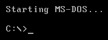
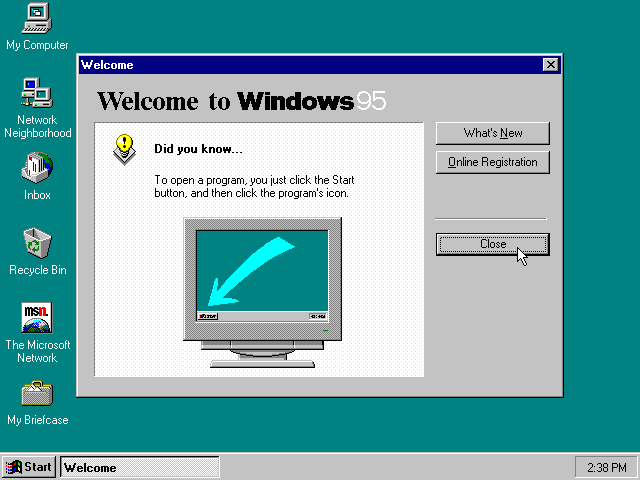
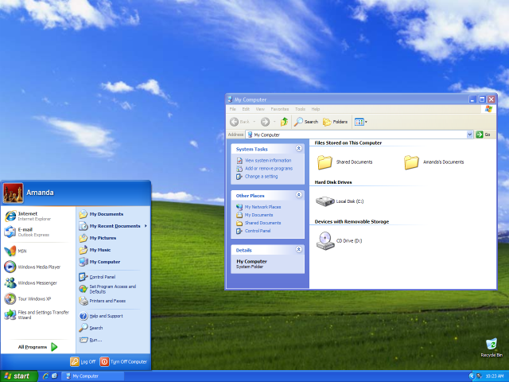

Introducción
Realmente no se trata de una biografía como tal sino de un resumen sobre el uso de la informática a lo largo de los años.
Mi viaje por los sistemas operativos

El primer contacto con ordenadores fue a comienzos de la década de los 90 usando principalmente MS-DOS como sistema operativo en 1990. En aquella época el uso principal fue jugar a juegos de entonces pero se adquieron conocimientos como la estructura del sistema operativo y el manejo básico del mismo.

Ocasionalmente se hacía uso por entretenimiento de Windows en sus versiones 1.0 y 2.x ejecutándolo a partir de MS-DOS, pero no fue hasta la versión 3.11 for Workgroups en 1992 que se le dió uso como sistema principal en vez de MS-DOS.
Para 1994 si bien aún todavía el uso principal seguía siendo el entretenimiento, el hecho de que en ciertas situaciones fuese necasario tocar partes básicas del sistema operativo y que la abstracción con respecto al hardware fuese menor que en épocas posteriores, el interés tanto de las bases de software como el hardware seguía ahí. Por esto se adquirió un conocimiento básico de los diversos componentes básicos del hardware y la interconexión entre ellos además de curiosidad sobre otros sistemas operativos.
En ese mismo año, en un ordenador que quedaba sobrante en la familia, se empezó a tomar cierto contacto básico con GNU/Linux a través de Debian adquiriendo conocimientos de las particiones básicas y la estructura del sistema de archivos. El uso no pasó más allá de eso, se siguió utilizando Windows como sistema operativo.

En los siguientes años entre 1994 y 1998 se usaron las versiones de Windows 95 y posteriormente 98, donde se acompaño el mero ocio con un uso enfocado a los estudios mediante aplicaciones de ofimática, que a pesar de existir tiempo antes incluso para MS-DOS no se había hecho uso alguno, y además al uso de InfoVía.
Dentro del año 1998 acompañando a Windows se dejó una parte del disco duro donde mediante arranque dual se mantuvo contacto con GNU/Linux probando distribuciones como Mandrake y SuSE Linux a modo de tener cierto conocimiento práctico de dicho sistema.

Años posteriores hasta el 2002 se tuvo cierto contacto con Windows ME y también se tocó casualmente versiones NT de Windows como NT 4.0 y 2000, dando posteriormente a dar uso principal a Windows XP. El uso de Windows con base NT provocó también que cierto uso que todavía se le daba a MS-DOS desapareciese por completo.
A partir del 2002, el contacto con GNU/Linux que había continuado hasta entonces probando alguna distribución más como Red Hat, pasó a ser más habitual siendo más difícil determinar cual era el sistema operativo principal hasta que sobre 2004 con el cambio de nombre de Mandrake a Mandriva se terminó posicionando GNU/Linux como el sistema que más se utilizaba. Se llegó incluso a dejar como único sistema operativo manteniendo una capa de compatibilidad dentro del mismo cuando por casos específicos se necesitaba usar alguna aplicación solo existente para Windows.
En años posteriores se dió uso a otra serie de distribuciones como Gentoo, sobre los años 2006 a 2007, Ubuntu entre el 2007 y 2011, y finalmente Fedora la cual se mantiene en uso hasta el día de hoy.

En la actualidad debido a que los ordenadores adquiridos han sido principalmente portátiles y que suelen incluír licencias de Windows por motivos de soporte e instalación de ciertos firmwares y también debido a que el soporte técnico de algunas marcas solo se efectua si suceden los problemas sobre Windows, se mantiene como arranque dual ocupando una parte muy reducida del espacio en disco y solo a efectos de lo antes mencionado. A parte de eso debido a según como se desarrolle el ámbito político entre la UE y EEUU, se tiene en mente cambiar el uso de Fedora a openSUSE.
Proyectos Web
A pesar de haber hecho alguna que otra página principalmente estática, existen dos que si merecen ser reseñadas.
Mamemania
Está página que existío entre 2002 y 2004 se basó sobre en su momento popular PHP-Nuke, se centraba en información y torneos relativos MAME, un emulador de máquinas arcade.
Los torneos se realizaban en línea mediante la plataforma Kaillera que simulaba las entradas de los jugadores a través de Internet y las recibía el servidor.
HD-Spain
Este proyecto que existió de 2008 a 2021 que se realizó desde cero con programación directa sobre PHP sin el uso de framework alguno, salvo la parte del foro que se basó en la versión 2 de phpBB pero modificada para integración completa con el resto de la Web, supone el principal desarrollo realizado.